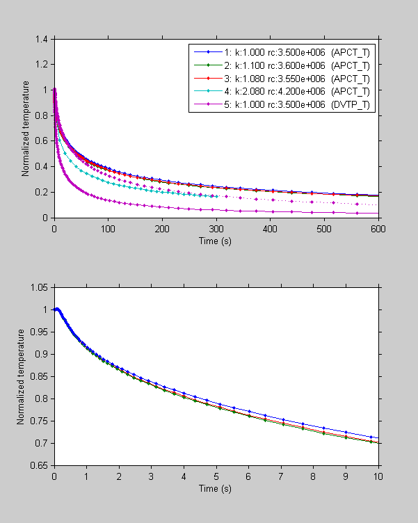

The TP-Fit Hacker Guide gives in depth information about the low level functions of TP-Fit. This guide is not intended for the regular user, but for people who are confident they know what they do. Please do not make any changes to a production installation of TP-Fit. Only change your private working copy and consider to submit changes that you found useful for inclusion in future official releases of TP-Fit.
This section describes how to work with TP-Fit reference models.
TP-Fit reference models are stored in look-up tables that are stored in Matlab
*.mat files on disc. It is possible to load this tables by using the
Matlab load function or by just drag and drop the *.mat files,
containing a single structure variable M, on the command window.
However, it is recommended to use the LoadModel(ModelType) function (type help LoadModel for details), to access these models. If the model locations or names will change, only LoadModel has to be adapted to keep all depending code working. To load the DVTP reference temperature table type:
M=LoadModel('DVTP_T');
The APCT table can be loaded with
M=LoadModel('APCT_T');
The lookup table structure M contains the following fields:
M =
ks: [1x21 double]
rcs: [1x21 double]
k: [21x21 double]
rc: [21x21 double]
T: {21x21 cell}
t: [1x201 double]
Info: [1x1 struct]
The vectors ks and rcs contain a list of all different sediment thermal conductivities (ks) and volumetric heat capacities (rcs) provided in the lookup tables. See the following subsets of ks and rcs:
ks=M.ks([1:3 end-1:end])
rcs=M.rcs([1:3 end-1:end])
ks =
0.5000 0.6000 0.7000 2.4000 2.5000
rcs =
2300000 2400000 2500000 4200000 4300000
The tables (matrices) k and rc contain somewhat redundant information and are provided for security/convenience. They contain the values in ks and rcs ordered in a 2D lookup table (k increasing with rows and rc increasing with columns). Compare the results of the following commands with the ks and rcs printed above:
i=3;
j=2;
k=M.k(i,j)
0.7000
rc=M.rc(i,j)
2400000
A vector of reference temperatures corresponding to k and rc can be retrieved by:
T=M.T{i,j};
Temperatures are stored in an array of cells ({i,j} and not (i,j)!!!). The DVTP model also contains the field T2 which contains model temperatures at the location of the second thermistor.
The model times, stored in the vector M.t, are not necessarily equidistant! Most models use a logarithmic time scale:
t=M.t;
tStart=t(1:3)
0 0.0100 0.0108
tEnd=t(end-2:end)
1.0e+005 *
0.8504 0.9222 1.0000
TStart=T(1:3)
1.0000 1.0002 1.0002
TEnd=T(end-2:end)
0.0011 0.0008 0.0005
Furthermore, LoadModel adds the location from where the model was loaded to the M.Info field which can contain also other optional information regarding the model:
M.Info.ModelFile
D:\home\martin\TODP\APC3\TP-Fit\MatLab\TP-Fit\RefModels\APCT_TModels.mat
The model table structure, contained in M, is difficult to handle, since times are not equidistant, and the structure of the tables may change in the future. Therfore, it is recommended to access the reference models through the "high-level" function GetRefDecay, if possible!
Below, several examples of GetRefDecay calls are shown and the resulting RefData is compared in a plot.
If called without parameters GetRefDecay
will use a set of standard parameters. A APCT temperature model with
sediment thermal conductivity k=1 and volumetric heat capacity rc=3.5e6
will be returned. The temperatures T are still at the same times t (not
equidistant) as in the model *.mat file. The Info field of the M structure (see above) is stored in the ModelInfo field.
RefData{1}=GetRefDecay;
disp(RefData{1});
k: 1
rc: 3500000
t: [1x201 double]
T: [1x201 double]
ModelType: 'APCT_T'
ModelInfo: [1x1 struct]
To get a reference model corresponding to certain parameters, both parameters have to be provided (GetRefDecay(k,rc)). If two output variables are requested, GetRefDecay also returns the table structure M that was loaded. The parameters have to be in the range of the table, otherwise NaNs are returned. If the parameters are in between table entries, the closest entries are chosen by default (see warning):
[RefData{2},M]=GetRefDecay(1.08,3.55e6);
Warning: k not in model lookup table. Unsing closest!
k=RefData{2}.k
1.1000
rc=RefData{2}.rc
3.6000e+006
It is also possible to interpolate between closest table entries (,'InterpProps',true) instead. But this "3D" interpolation is rather slow!
Also, for every call of GetRefDecay the reference table has to be loaded from disc. If you want to get many models from the same table it is possible to speed things up by retrieving the table (M) during the first call (see above) and reuse it with (,'M',M).
RefData{3}=GetRefDecay(1.08,3.55e6,'InterpProps',true,'M',M);
k=RefData{3}.k
1.0800
rc=RefData{3}.rc
3550000
All the data above is still at original model times. If you want the model at specific times (e.g. from 0s to 300s in 10s
intervals), time interpolation is enabled using the 'ts' parameter. Time interpolation is much faster than parameter interpolation (both types of interpolation can be combined!).
RefData{4}=GetRefDecay(2.08,4.2e6,'InterpProps',true,'ts',0:10:300);
To load a model other than the APCT temperature model the model type (see LoadModel) has to be specified, explicitly. Using the DVTP Model it is also possible to retrieve the temperatures of the second sensor (,'GetT2',true).
RefData{5}=GetRefDecay(1,3.5e6,'ModelType','DVTP_T','GetT2',true);
disp(RefData{5});
k: 1
rc: 3500000
t: [1x201 double]
T: [1x201 double]
T2: [1x201 double]
ModelType: 'DVTP_T'
ModelInfo: [1x1 struct]
To get a nice ASCII table of the reference model use the Print option (,'Print',true) if you specify an additional filename (,'FileName','MyOutFile.dat') the ASCII-table is dumped to the file instead to the promt:
GetRefDecay(1,3.5e6,'ts',[0:10:50],'Print',true);
APCT-3 Model: k= 1.00 (W/(m K)); rc= 3.50 (MJ/ m^3 K)
t (s) T (°C)
0.000000 1.000000
10.000000 0.711148
20.000000 0.618901
30.000000 0.560470
40.000000 0.518053
50.000000 0.485129

Each line numbered in the legend corresponds to the RefData{i} of the previous section. The dotted line shows the second thermistor of
the DVTP model. The lower plot high-lights the interpolation of thermal
properties. The upper and the lower lines are straight from the look-up
table, while the red line is interpolated between these two. Also, the
different sampling rates/intervals can be seen.